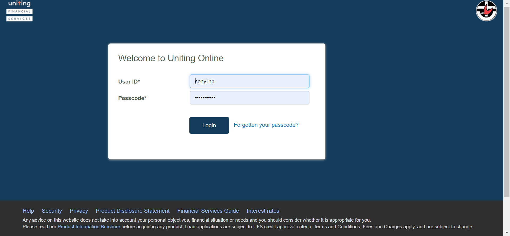

-
IBPayments
18:28:55 PM / 05:11:460 Fail
IBPayments
10.07.2024 18:28:55 10.08.2024 07:04:06 05:11:460 · #test-id=2FailPerform Internal Transfer IB NowFailPerform Internal Transfer IB NowWhen close all the other opened windows before loading the urlWhen User opens the IB URLGiven I login with username "298010" and password "Temenos@123" of IB And click on Go to AccountsAnd click on Transfers and Pay buttonThen click on transfer buttonThen Enter the transaction detailsThen confirm the internal transfer paymentAnd Review the internal transferThen logout from IbAnd Login to authorizer account with username "
And click on Go to AccountsAnd click on Transfers and Pay buttonThen click on transfer buttonThen Enter the transaction detailsThen confirm the internal transfer paymentAnd Review the internal transferThen logout from IbAnd Login to authorizer account with username ""and password " " And click on Go to Accountscom.frameium.stepdef.Hooks.afterEveryStep(io.cucumber.java.Scenario) And click on Transfers and Pay buttonStep skippedThen click on Authorization buttonStep skippedAnd Authorize the internal transferStep skippedThen Review authorization that the details are reflected correctlyStep skippedThen logout from IbStep skippedWhen User opens the T24 UrlStep skippedThen User should be able to login to T24Step skippedThen The user should be able to fill the commandlineStep skippedAnd The user should be able to click on general enquiries buttomStep skippedAnd click on the IB-view of account entriesStep skippedThen Enter the account number of internal transfer-IBStep skippedAnd click on find buttonStep skippedThen verify whether the narratives of internal trasfer-IB is reflected in the IB-view of account entriesStep skippedFailPerform Internal Transfer IB NowWhen close all the other opened windows before loading the urlcom.frameium.stepdef.Ufs.IBPayments.afterStep(io.cucumber.java.Scenario)com.frameium.stepdef.Hooks.afterEveryStep(io.cucumber.java.Scenario)When User opens the IB URLStep skippedGiven I login with username "298010" and password "Temenos@123" of IBStep skippedAnd click on Go to AccountsStep skippedAnd click on Transfers and Pay buttonStep skippedThen click on transfer buttonStep skippedThen Enter the transaction detailsStep skippedThen confirm the internal transfer paymentStep skippedAnd Review the internal transferStep skippedThen logout from IbStep skippedAnd Login to authorizer account with username "
And click on Transfers and Pay buttonStep skippedThen click on Authorization buttonStep skippedAnd Authorize the internal transferStep skippedThen Review authorization that the details are reflected correctlyStep skippedThen logout from IbStep skippedWhen User opens the T24 UrlStep skippedThen User should be able to login to T24Step skippedThen The user should be able to fill the commandlineStep skippedAnd The user should be able to click on general enquiries buttomStep skippedAnd click on the IB-view of account entriesStep skippedThen Enter the account number of internal transfer-IBStep skippedAnd click on find buttonStep skippedThen verify whether the narratives of internal trasfer-IB is reflected in the IB-view of account entriesStep skippedFailPerform Internal Transfer IB NowWhen close all the other opened windows before loading the urlcom.frameium.stepdef.Ufs.IBPayments.afterStep(io.cucumber.java.Scenario)com.frameium.stepdef.Hooks.afterEveryStep(io.cucumber.java.Scenario)When User opens the IB URLStep skippedGiven I login with username "298010" and password "Temenos@123" of IBStep skippedAnd click on Go to AccountsStep skippedAnd click on Transfers and Pay buttonStep skippedThen click on transfer buttonStep skippedThen Enter the transaction detailsStep skippedThen confirm the internal transfer paymentStep skippedAnd Review the internal transferStep skippedThen logout from IbStep skippedAnd Login to authorizer account with username ""and password " " Step skippedAnd click on Go to AccountsStep skippedAnd click on Transfers and Pay buttonStep skippedThen click on Authorization buttonStep skippedAnd Authorize the internal transferStep skippedThen Review authorization that the details are reflected correctlyStep skippedThen logout from IbStep skippedWhen User opens the T24 UrlStep skippedThen User should be able to login to T24Step skippedThen The user should be able to fill the commandlineStep skippedAnd The user should be able to click on general enquiries buttomStep skippedAnd click on the IB-view of account entriesStep skippedThen Enter the account number of internal transfer-IBStep skippedAnd click on find buttonStep skippedThen verify whether the narratives of internal trasfer-IB is reflected in the IB-view of account entriesStep skippedFailPerform Internal Transfer IB futureFailPerform Internal Transfer IB futureWhen close all the other opened windows before loading the urlcom.frameium.stepdef.Ufs.IBPayments.afterStep(io.cucumber.java.Scenario)com.frameium.stepdef.Hooks.afterEveryStep(io.cucumber.java.Scenario)When User opens the IB URLStep skippedGiven I login with username "298010" and password "Temenos@123" of IBStep skippedAnd click on Go to AccountsStep skippedAnd click on Transfers and Pay buttonStep skippedThen click on transfer buttonStep skippedThen Enter the future transaction details in IBStep skippedAnd click on continue buttonStep skippedThen confirm the internal transfer future paymentStep skippedAnd Review the internal transfer future paymentStep skippedThen logout from IbStep skippedAnd Login to authorizer account with username ""and password " " Step skippedAnd click on Go to AccountsStep skippedAnd click on Transfers and Pay buttonStep skippedThen click on Authorization buttonStep skippedAnd Authorize the internal transfer futureStep skippedThen Review authorization that the details of internal transfer future is reflected correctlyStep skippedFailPerform Internal Transfer IB futureWhen close all the other opened windows before loading the urlcom.frameium.stepdef.Ufs.IBPayments.afterStep(io.cucumber.java.Scenario)com.frameium.stepdef.Hooks.afterEveryStep(io.cucumber.java.Scenario)When User opens the IB URLStep skippedGiven I login with username "298010" and password "Temenos@123" of IBStep skippedAnd click on Go to AccountsStep skippedAnd click on Transfers and Pay buttonStep skippedThen click on transfer buttonStep skippedThen Enter the future transaction details in IBStep skippedAnd click on continue buttonStep skippedThen confirm the internal transfer future paymentStep skippedAnd Review the internal transfer future paymentStep skippedThen logout from IbStep skippedAnd Login to authorizer account with username ""and password " " Step skippedAnd click on Go to AccountsStep skippedAnd click on Transfers and Pay buttonStep skippedThen click on Authorization buttonStep skippedAnd Authorize the internal transfer futureStep skippedThen Review authorization that the details of internal transfer future is reflected correctlyStep skippedFailPerform Internal Transfer IB RecurringFailPerform Internal Transfer IB RecurringWhen close all the other opened windows before loading the urlcom.frameium.stepdef.Ufs.IBPayments.afterStep(io.cucumber.java.Scenario)com.frameium.stepdef.Hooks.afterEveryStep(io.cucumber.java.Scenario)When User opens the IB URLStep skippedGiven I login with username "298010" and password "Temenos@123" of IBStep skippedAnd click on Go to AccountsStep skippedAnd click on Transfers and Pay buttonStep skippedThen click on transfer buttonStep skippedThen Enter the Internal Recurring transaction details in IBStep skippedAnd click on continue buttonStep skippedThen confirm the internal trasfer IB recurringStep skippedAnd Review the internal transfer Recurring paymentStep skippedThen logout from IbStep skippedAnd Login to authorizer account with username ""and password " " Step skippedAnd click on Go to AccountsStep skippedAnd click on Transfers and Pay buttonStep skippedThen click on Authorization buttonStep skippedAnd Authorize the internal transfer RecurringStep skippedThen Review authorization that the details of internal transfer Recurring is reflected correctlyStep skippedFailPerform Internal Transfer IB RecurringWhen close all the other opened windows before loading the urlcom.frameium.stepdef.Ufs.IBPayments.afterStep(io.cucumber.java.Scenario)com.frameium.stepdef.Hooks.afterEveryStep(io.cucumber.java.Scenario)When User opens the IB URLStep skippedGiven I login with username "298010" and password "Temenos@123" of IBStep skippedAnd click on Go to AccountsStep skippedAnd click on Transfers and Pay buttonStep skippedThen click on transfer buttonStep skippedThen Enter the Internal Recurring transaction details in IBStep skippedAnd click on continue buttonStep skippedThen confirm the internal trasfer IB recurringStep skippedAnd Review the internal transfer Recurring paymentStep skippedThen logout from IbStep skippedAnd Login to authorizer account with username ""and password " " Step skippedAnd click on Go to AccountsStep skippedAnd click on Transfers and Pay buttonStep skippedThen click on Authorization buttonStep skippedAnd Authorize the internal transfer RecurringStep skippedThen Review authorization that the details of internal transfer Recurring is reflected correctlyStep skippedFailPerform External Transfer IB saved nowFailPerform External Transfer IB saved nowWhen close all the other opened windows before loading the urlcom.frameium.stepdef.Ufs.IBPayments.afterStep(io.cucumber.java.Scenario)com.frameium.stepdef.Hooks.afterEveryStep(io.cucumber.java.Scenario)When User opens the IB URLStep skippedGiven I login with username "298010" and password "Temenos@123" of IBStep skippedAnd click on Go to AccountsStep skippedAnd click on Transfers and Pay buttonStep skippedThen click on transfer buttonStep skippedAnd Enter the details for external transfer nowStep skippedThen Confirm the external transfer IBStep skippedAnd Review the external transfer now paymentStep skippedThen logout from IbStep skippedAnd Login to authorizer account with username ""and password " " Step skippedAnd click on Go to AccountsStep skippedAnd click on Transfers and Pay buttonStep skippedThen click on Authorization buttonStep skippedAnd Authorize the External transfer nowStep skippedThen Review authorization that the details of external transfer is reflected correctlyStep skippedFailPerform External Transfer IB saved nowWhen close all the other opened windows before loading the urlcom.frameium.stepdef.Ufs.IBPayments.afterStep(io.cucumber.java.Scenario)com.frameium.stepdef.Hooks.afterEveryStep(io.cucumber.java.Scenario)When User opens the IB URLStep skippedGiven I login with username "298010" and password "Temenos@123" of IBStep skippedAnd click on Go to AccountsStep skippedAnd click on Transfers and Pay buttonStep skippedThen click on transfer buttonStep skippedAnd Enter the details for external transfer nowStep skippedThen Confirm the external transfer IBStep skippedAnd Review the external transfer now paymentStep skippedThen logout from IbStep skippedAnd Login to authorizer account with username ""and password " " Step skippedAnd click on Go to AccountsStep skippedAnd click on Transfers and Pay buttonStep skippedThen click on Authorization buttonStep skippedAnd Authorize the External transfer nowStep skippedThen Review authorization that the details of external transfer is reflected correctlyStep skippedFailExternal Transfer saved IB RecurringFailExternal Transfer saved IB RecurringWhen close all the other opened windows before loading the urlcom.frameium.stepdef.Ufs.IBPayments.afterStep(io.cucumber.java.Scenario)com.frameium.stepdef.Hooks.afterEveryStep(io.cucumber.java.Scenario)When User opens the IB URLStep skippedGiven I login with username "298010" and password "Temenos@123" of IBStep skippedAnd click on Go to AccountsStep skippedAnd click on Transfers and Pay buttonStep skippedThen click on transfer buttonStep skippedAnd Enter the details for external transfer recurringStep skippedThen Confirm the external transfer IBStep skippedAnd Review the external transfer recurring paymentStep skippedThen logout from IbStep skippedAnd Login to authorizer account with username ""and password " " Step skippedAnd click on Go to AccountsStep skippedAnd click on Transfers and Pay buttonStep skippedThen click on Authorization buttonStep skippedAnd Authorize the External transfer recurringStep skippedThen Review authorization that the details of external transfer recurring is reflected correctlyStep skippedFailExternal Transfer saved IB RecurringWhen close all the other opened windows before loading the urlcom.frameium.stepdef.Ufs.IBPayments.afterStep(io.cucumber.java.Scenario)com.frameium.stepdef.Hooks.afterEveryStep(io.cucumber.java.Scenario)When User opens the IB URLStep skippedGiven I login with username "298010" and password "Temenos@123" of IBStep skippedAnd click on Go to AccountsStep skippedAnd click on Transfers and Pay buttonStep skippedThen click on transfer buttonStep skippedAnd Enter the details for external transfer recurringStep skippedThen Confirm the external transfer IBStep skippedAnd Review the external transfer recurring paymentStep skippedThen logout from IbStep skippedAnd Login to authorizer account with username ""and password " " Step skippedAnd click on Go to AccountsStep skippedAnd click on Transfers and Pay buttonStep skippedThen click on Authorization buttonStep skippedAnd Authorize the External transfer recurringStep skippedThen Review authorization that the details of external transfer recurring is reflected correctlyStep skippedFailExternal Transfer saved IB futureFailExternal Transfer saved IB futureWhen close all the other opened windows before loading the urlcom.frameium.stepdef.Ufs.IBPayments.afterStep(io.cucumber.java.Scenario)com.frameium.stepdef.Hooks.afterEveryStep(io.cucumber.java.Scenario)When User opens the IB URLStep skippedGiven I login with username "298010" and password "Temenos@123" of IBStep skippedAnd click on Go to AccountsStep skippedAnd click on Transfers and Pay buttonStep skippedThen click on transfer buttonStep skippedThen Enter the external future transaction details in IBStep skippedAnd click on continue buttonStep skippedThen confirm the internal transfer future paymentStep skippedAnd Review the internal transfer future paymentStep skippedThen logout from IbStep skippedAnd Login to authorizer account with username ""and password " " Step skippedAnd click on Go to AccountsStep skippedAnd click on Transfers and Pay buttonStep skippedThen click on Authorization buttonStep skippedAnd Authorize the internal transfer futureStep skippedThen Review authorization that the details of internal transfer future is reflected correctlyStep skippedFailExternal Transfer saved IB futureWhen close all the other opened windows before loading the urlcom.frameium.stepdef.Ufs.IBPayments.afterStep(io.cucumber.java.Scenario)com.frameium.stepdef.Hooks.afterEveryStep(io.cucumber.java.Scenario)When User opens the IB URLStep skippedGiven I login with username "298010" and password "Temenos@123" of IBStep skippedAnd click on Go to AccountsStep skippedAnd click on Transfers and Pay buttonStep skippedThen click on transfer buttonStep skippedThen Enter the external future transaction details in IBStep skippedAnd click on continue buttonStep skippedThen confirm the internal transfer future paymentStep skippedAnd Review the internal transfer future paymentStep skippedThen logout from IbStep skippedAnd Login to authorizer account with username ""and password " " Step skippedAnd click on Go to AccountsStep skippedAnd click on Transfers and Pay buttonStep skippedThen click on Authorization buttonStep skippedAnd Authorize the internal transfer futureStep skippedThen Review authorization that the details of internal transfer future is reflected correctlyStep skipped
-
org.openqa.selenium.WebDriverException
1 tests
org.openqa.selenium.WebDriverException
1 failedStatus Timestamp TestName Fail 07:03:07 AM When close all the other opened windows before loading the url IBPayments.Perform Internal Transfer IB Now.When close all the other opened windows before loading the urlFail 07:03:08 AM com.frameium.stepdef.Ufs.IBPayments.afterStep(io.cucumber.java.Scenario) IBPayments.Perform Internal Transfer IB Now.com.frameium.stepdef.Ufs.IBPayments.afterStep(io.cucumber.java.Scenario)Fail 07:03:08 AM com.frameium.stepdef.Hooks.afterEveryStep(io.cucumber.java.Scenario) IBPayments.Perform Internal Transfer IB Now.com.frameium.stepdef.Hooks.afterEveryStep(io.cucumber.java.Scenario)Fail 07:03:10 AM When close all the other opened windows before loading the url IBPayments.Perform Internal Transfer IB future.When close all the other opened windows before loading the urlFail 07:03:11 AM com.frameium.stepdef.Ufs.IBPayments.afterStep(io.cucumber.java.Scenario) IBPayments.Perform Internal Transfer IB future.com.frameium.stepdef.Ufs.IBPayments.afterStep(io.cucumber.java.Scenario)Fail 07:03:11 AM com.frameium.stepdef.Hooks.afterEveryStep(io.cucumber.java.Scenario) IBPayments.Perform Internal Transfer IB future.com.frameium.stepdef.Hooks.afterEveryStep(io.cucumber.java.Scenario)Fail 07:03:13 AM When close all the other opened windows before loading the url IBPayments.Perform Internal Transfer IB future.When close all the other opened windows before loading the urlFail 07:03:14 AM com.frameium.stepdef.Ufs.IBPayments.afterStep(io.cucumber.java.Scenario) IBPayments.Perform Internal Transfer IB future.com.frameium.stepdef.Ufs.IBPayments.afterStep(io.cucumber.java.Scenario)Fail 07:03:14 AM com.frameium.stepdef.Hooks.afterEveryStep(io.cucumber.java.Scenario) IBPayments.Perform Internal Transfer IB future.com.frameium.stepdef.Hooks.afterEveryStep(io.cucumber.java.Scenario)Fail 07:03:16 AM When close all the other opened windows before loading the url IBPayments.Perform Internal Transfer IB Recurring.When close all the other opened windows before loading the urlFail 07:03:17 AM com.frameium.stepdef.Ufs.IBPayments.afterStep(io.cucumber.java.Scenario) IBPayments.Perform Internal Transfer IB Recurring.com.frameium.stepdef.Ufs.IBPayments.afterStep(io.cucumber.java.Scenario)Fail 07:03:17 AM com.frameium.stepdef.Hooks.afterEveryStep(io.cucumber.java.Scenario) IBPayments.Perform Internal Transfer IB Recurring.com.frameium.stepdef.Hooks.afterEveryStep(io.cucumber.java.Scenario)Fail 07:03:26 AM When close all the other opened windows before loading the url IBPayments.Perform Internal Transfer IB Recurring.When close all the other opened windows before loading the urlFail 07:03:27 AM com.frameium.stepdef.Ufs.IBPayments.afterStep(io.cucumber.java.Scenario) IBPayments.Perform Internal Transfer IB Recurring.com.frameium.stepdef.Ufs.IBPayments.afterStep(io.cucumber.java.Scenario)Fail 07:03:27 AM com.frameium.stepdef.Hooks.afterEveryStep(io.cucumber.java.Scenario) IBPayments.Perform Internal Transfer IB Recurring.com.frameium.stepdef.Hooks.afterEveryStep(io.cucumber.java.Scenario)Fail 07:03:31 AM When close all the other opened windows before loading the url IBPayments.Perform External Transfer IB saved now.When close all the other opened windows before loading the urlFail 07:03:32 AM com.frameium.stepdef.Ufs.IBPayments.afterStep(io.cucumber.java.Scenario) IBPayments.Perform External Transfer IB saved now.com.frameium.stepdef.Ufs.IBPayments.afterStep(io.cucumber.java.Scenario)Fail 07:03:38 AM com.frameium.stepdef.Hooks.afterEveryStep(io.cucumber.java.Scenario) IBPayments.Perform External Transfer IB saved now.com.frameium.stepdef.Hooks.afterEveryStep(io.cucumber.java.Scenario)Fail 07:03:46 AM When close all the other opened windows before loading the url IBPayments.Perform External Transfer IB saved now.When close all the other opened windows before loading the urlFail 07:03:47 AM com.frameium.stepdef.Ufs.IBPayments.afterStep(io.cucumber.java.Scenario) IBPayments.Perform External Transfer IB saved now.com.frameium.stepdef.Ufs.IBPayments.afterStep(io.cucumber.java.Scenario)Fail 07:03:47 AM com.frameium.stepdef.Hooks.afterEveryStep(io.cucumber.java.Scenario) IBPayments.Perform External Transfer IB saved now.com.frameium.stepdef.Hooks.afterEveryStep(io.cucumber.java.Scenario)Fail 07:03:55 AM When close all the other opened windows before loading the url IBPayments.External Transfer saved IB Recurring.When close all the other opened windows before loading the urlFail 07:03:56 AM com.frameium.stepdef.Ufs.IBPayments.afterStep(io.cucumber.java.Scenario) IBPayments.External Transfer saved IB Recurring.com.frameium.stepdef.Ufs.IBPayments.afterStep(io.cucumber.java.Scenario)Fail 07:03:56 AM com.frameium.stepdef.Hooks.afterEveryStep(io.cucumber.java.Scenario) IBPayments.External Transfer saved IB Recurring.com.frameium.stepdef.Hooks.afterEveryStep(io.cucumber.java.Scenario)Fail 07:03:57 AM When close all the other opened windows before loading the url IBPayments.External Transfer saved IB Recurring.When close all the other opened windows before loading the urlFail 07:03:59 AM com.frameium.stepdef.Ufs.IBPayments.afterStep(io.cucumber.java.Scenario) IBPayments.External Transfer saved IB Recurring.com.frameium.stepdef.Ufs.IBPayments.afterStep(io.cucumber.java.Scenario)Fail 07:03:59 AM com.frameium.stepdef.Hooks.afterEveryStep(io.cucumber.java.Scenario) IBPayments.External Transfer saved IB Recurring.com.frameium.stepdef.Hooks.afterEveryStep(io.cucumber.java.Scenario)Fail 07:04:01 AM When close all the other opened windows before loading the url IBPayments.External Transfer saved IB future.When close all the other opened windows before loading the urlFail 07:04:02 AM com.frameium.stepdef.Ufs.IBPayments.afterStep(io.cucumber.java.Scenario) IBPayments.External Transfer saved IB future.com.frameium.stepdef.Ufs.IBPayments.afterStep(io.cucumber.java.Scenario)Fail 07:04:02 AM com.frameium.stepdef.Hooks.afterEveryStep(io.cucumber.java.Scenario) IBPayments.External Transfer saved IB future.com.frameium.stepdef.Hooks.afterEveryStep(io.cucumber.java.Scenario)Fail 07:04:04 AM When close all the other opened windows before loading the url IBPayments.External Transfer saved IB future.When close all the other opened windows before loading the urlFail 07:04:06 AM com.frameium.stepdef.Ufs.IBPayments.afterStep(io.cucumber.java.Scenario) IBPayments.External Transfer saved IB future.com.frameium.stepdef.Ufs.IBPayments.afterStep(io.cucumber.java.Scenario)Fail 07:04:06 AM com.frameium.stepdef.Hooks.afterEveryStep(io.cucumber.java.Scenario) IBPayments.External Transfer saved IB future.com.frameium.stepdef.Hooks.afterEveryStep(io.cucumber.java.Scenario) -
java.lang.IllegalArgumentException
1 tests
java.lang.IllegalArgumentException
1 failedStatus Timestamp TestName Fail 18:33:26 PM And click on Go to Accounts IBPayments.Perform Internal Transfer IB Now.And click on Go to Accounts
-
@firstday1
18 tests
@firstday1
18 failedStatus Timestamp TestName Fail 18:28:55 PM Perform Internal Transfer IB Now IBPayments.Perform Internal Transfer IB NowFail 18:28:55 PM Perform Internal Transfer IB Now IBPayments.Perform Internal Transfer IB NowFail 07:03:05 AM Perform Internal Transfer IB Now IBPayments.Perform Internal Transfer IB NowFail 07:03:10 AM Perform Internal Transfer IB future IBPayments.Perform Internal Transfer IB futureFail 07:03:10 AM Perform Internal Transfer IB future IBPayments.Perform Internal Transfer IB futureFail 07:03:12 AM Perform Internal Transfer IB future IBPayments.Perform Internal Transfer IB futureFail 07:03:15 AM Perform Internal Transfer IB Recurring IBPayments.Perform Internal Transfer IB RecurringFail 07:03:15 AM Perform Internal Transfer IB Recurring IBPayments.Perform Internal Transfer IB RecurringFail 07:03:23 AM Perform Internal Transfer IB Recurring IBPayments.Perform Internal Transfer IB RecurringFail 07:03:30 AM Perform External Transfer IB saved now IBPayments.Perform External Transfer IB saved nowFail 07:03:30 AM Perform External Transfer IB saved now IBPayments.Perform External Transfer IB saved nowFail 07:03:44 AM Perform External Transfer IB saved now IBPayments.Perform External Transfer IB saved nowFail 07:03:54 AM External Transfer saved IB Recurring IBPayments.External Transfer saved IB RecurringFail 07:03:54 AM External Transfer saved IB Recurring IBPayments.External Transfer saved IB RecurringFail 07:03:56 AM External Transfer saved IB Recurring IBPayments.External Transfer saved IB RecurringFail 07:04:00 AM External Transfer saved IB future IBPayments.External Transfer saved IB futureFail 07:04:00 AM External Transfer saved IB future IBPayments.External Transfer saved IB futureFail 07:04:04 AM External Transfer saved IB future IBPayments.External Transfer saved IB future
Started
Oct 7, 2024 06:28:35 PM
Ended
Oct 8, 2024 07:04:09 AM
Features Passed
0
Features Failed
1
Features
Scenarios
Steps
Timeline
Tags
| Name | Passed | Failed | Skipped | Others | Passed % |
|---|---|---|---|---|---|
| @firstday1 | 0 | 18 | 0 | 0 | 0% |